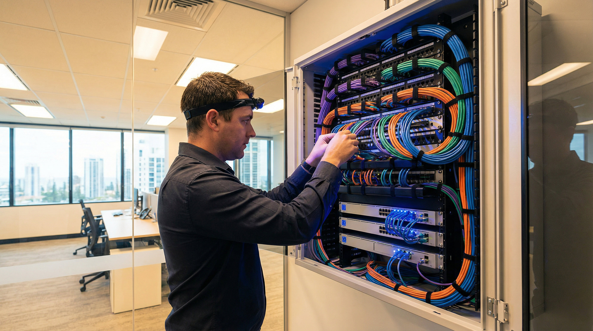
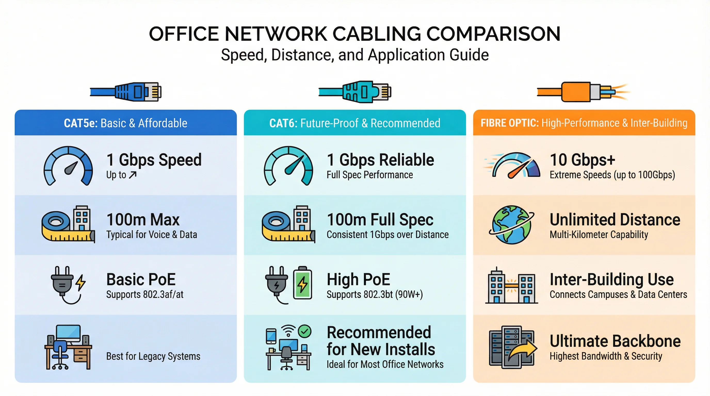
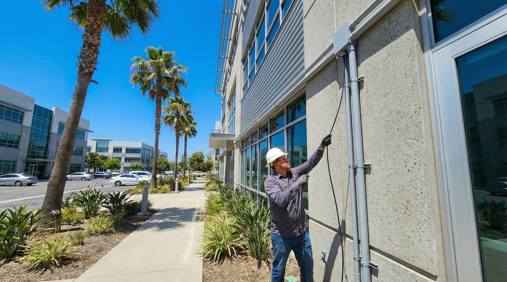
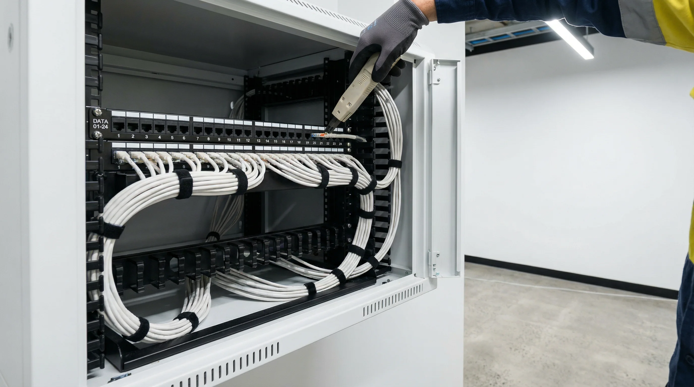

Structured data cabling for Gold Coast small and medium businesses — new office fit-outs, office relocations, WiFi access point runs, outdoor cabling, data cabinet supply and installation, and data cabinet cleanup. No job too small. Cat5e, Cat6 and fibre. Tested and certified before sign-off.
Quick Summary
Cable Type Guide
Most Gold Coast small business offices run perfectly well on Cat6 cabling — it supports gigabit network speeds, PoE for phones and access points, and has plenty of headroom for future upgrades. Cat5e remains a cost-effective option for less demanding environments. Fibre is used where long cable runs, interference or inter-building connections are involved. Here is a plain-English guide to which is right for your situation.
The recommended standard for new Gold Coast office installations. Supports gigabit speeds, handles PoE power delivery for VoIP handsets, IP cameras and WiFi access points, and meets current structured cabling standards. Future-proof for most SMB environments for 10+ years.
A cost-effective option for lower-density environments or budget-conscious fit-outs where gigabit performance is not a priority. Suitable for basic workstation connections and standard office networks. Not recommended for new PoE-heavy installations.
Used for inter-building runs, long cable distances exceeding copper limits, or environments with significant electrical interference. Also used as the backbone between floors or between a data cabinet and a distribution point in larger Gold Coast office premises.
Not sure which cabling type your Gold Coast office needs? Call 07 3041 8993 and describe your premises, your network equipment and what you are trying to achieve. We will advise the right cable type and layout before quoting.
Gold Coast Data Cabling Guide
Data cabling Gold Coast businesses rely on has changed considerably over the past decade. Most offices cabled in the early 2010s are running Cat5e — and while Cat5e still works, it was not designed for the way offices use their networks today. VoIP phones, wireless access points, IP cameras, cloud-based applications and video conferencing all put more demand on the physical cabling layer than a standard Cat5e installation was built to handle. If your Southport or Robina office is experiencing slow file transfers, dropped calls or unreliable wireless coverage, the cabling infrastructure is often the first place worth checking.
Cat5e remains the most common cable type in older Gold Coast office buildings. It supports speeds up to 1 gigabit per second over short distances and handles basic PoE (Power over Ethernet) for lower-draw devices. For a small office with a handful of workstations and no IP cameras or high-density wireless, Cat5e is still functional. The problem arises when you start adding PoE access points, IP phones and cameras to the same infrastructure. Cat5e was not designed for high-power PoE delivery — the IEEE 802.3bt standard (PoE++) requires cable that can handle the heat generated by higher wattage, and Cat5e can struggle here. Older Cat5e installations also tend to have poor termination quality, especially where the cable has been extended or re-terminated by someone other than the original installer.
Cat6 is the recommended standard for any new data cabling installation on the Gold Coast today. It supports gigabit speeds reliably across the full 100-metre channel length, handles PoE delivery for phones, cameras and access points without the thermal issues associated with Cat5e, and meets the current Australian structured cabling standard AS/NZS 11801. Cat6 cable has a tighter twist ratio and a central spline separator that reduces crosstalk between the four pairs — this matters in dense office environments where multiple cables run in parallel through the same conduit or ceiling void. Brands like Panduit, Belden, Commscope and Molex are widely used in commercial installations. Both unshielded (UTP) and shielded (STP/FTP) variants are available — shielded cable is worth considering in environments with significant electrical interference, such as workshops or plant rooms adjacent to office areas.
Fibre optic cabling is used where copper cable reaches its limits. The 100-metre distance limit of Cat6 is a real constraint in larger Gold Coast commercial premises — a multi-level building in Broadbeach or a large warehouse-style office in Coomera may have runs that cannot be served by copper from a single cabinet location. Fibre has no meaningful distance limit for the speeds used in office environments, is immune to electrical interference, and does not carry the earthing and surge risks associated with copper cable running between separate buildings. Single-mode fibre is used for very long runs; multimode fibre (OM3 or OM4) is the standard choice for inter-floor or inter-building links in commercial premises. For most Gold Coast small offices, fibre is only needed for the backbone link between a distribution cabinet and a floor switch, or for inter-building connections.

Cat5e, Cat6 and fibre optic cabling compared — speed, distance and PoE capability for Gold Coast office networks
Most office cabling runs are internal — through ceiling voids, wall cavities and cable management trays. Internal Cat6 cable is rated for indoor use and is not designed to handle UV exposure, moisture or temperature extremes. When a cable run needs to go outside — between two buildings on the same site, from a main building to a shed or outbuilding, or along an external wall — you need cable rated for outdoor use.
Outdoor-rated Cat6 uses a UV-stabilised jacket that resists degradation from sunlight. It is also rated for direct burial in some variants, which is relevant for runs that go underground through conduit. In Queensland's climate, UV exposure is a genuine concern — standard indoor cable jacket will crack and fail within a year or two if left exposed to direct sunlight on the Gold Coast. For runs between buildings, direct burial or conduit-enclosed outdoor Cat6 is the standard approach. Where the run is overhead — between buildings across a car park or yard — a messenger wire or catenary cable supports the cable span and prevents sagging under its own weight.
Outdoor fibre is the better choice for inter-building runs over 50 metres, or where the two buildings are on separate electrical circuits. Copper cable between buildings on separate electrical supplies creates a ground loop risk — a surge or lightning strike on one building can travel along the copper cable to the other. Fibre is electrically isolated and carries no such risk. For a Gold Coast business with a main office and a separate warehouse or outbuilding, outdoor armoured fibre is the standard recommendation.

Outdoor UV-rated Cat6 installed through conduit on a commercial building exterior — Gold Coast data cabling
The physical cabling is only part of the picture. How that cabling terminates at each end matters just as much. At the desk end, a wall outlet (also called a data point or RJ45 outlet) provides the connection point for a workstation, phone or other device. The outlet should be labelled with a port number that matches the corresponding port on the patch panel in the data cabinet — this is what makes moves and changes fast and fault-free.
At the cabinet end, a patch panel aggregates all the cable runs from the floor. Each cable is punched down to the back of the patch panel, and a short patch lead connects the front of the panel to the switch port. This means the switch itself never has cables running directly to desks — all desk connections are made and changed at the patch panel using short, cheap patch leads. A well-built patch panel installation with correct lead lengths, labelled ports and proper cable management is the difference between a cabinet that takes five minutes to reconfigure and one that takes an afternoon.
Patch panels come in 24-port and 48-port variants and are available in Cat5e, Cat6 and Cat6A versions. For a new installation, a Cat6 patch panel matched to Cat6 cable and Cat6 keystone jacks in the wall outlets gives you a consistent end-to-end Cat6 channel. Mixing Cat5e patch panels with Cat6 cable, or using Cat5e keystones in wall outlets on an otherwise Cat6 run, downgrades the entire channel to Cat5e performance — a common mistake in partial upgrades.
Data cabinets for Gold Coast small offices are typically wall-mount units — 6U to 12U for a small office, 12U to 18U for a medium office with a patch panel, a switch, a router and a UPS. Floor-standing cabinets are used in larger installations or where rack-mount servers are involved. The cabinet should be sized with room to grow — a 9U cabinet that is already full on day one leaves no space for a second switch, a wireless controller or a UPS. Proper cable management inside the cabinet — horizontal cable managers between patch panel rows, vertical cable managers on the sides — keeps the cabinet tidy and makes it easy to trace connections without disturbing active links. Call 07 3041 8993 to discuss the right cabinet and cabling layout for your Gold Coast office.
Our Services
We carry out data cabling jobs of all sizes for Gold Coast small and medium businesses — from a single extra outlet to a full office fit-out. No job is too small. For traditional phone handset cabling see our phone line installation Gold Coast page. Data cabling is part of our broader telecommunications services Gold Coast offering.
Full data cabling installation for new Gold Coast office fit-outs — Cat6 runs to every workstation, meeting room, server room and access point position. All outlets labelled, tested and recorded before furniture arrives and devices are connected.
Existing data cabling at your new Gold Coast premises assessed and tested — reused, extended or replaced to match your floor plan and device layout. Coordinated with your move date so the network is ready on day one.
One extra data point, a single cable run to a new desk or a small addition to an existing Gold Coast office network — we take on small and odd jobs without a large minimum charge. Quoted clearly, done neatly, tested before we leave.
External cable runs between buildings, from a main office to a shed, warehouse or separate structure on the same Gold Coast site — installed through conduit or via overhead runs, rated for outdoor exposure.
Cat6 runs to ceiling or wall-mount WiFi access point positions throughout your Gold Coast office — PoE-capable, correctly routed to your data cabinet and tested for signal continuity. Suitable for all major access point brands.
Wall-mount and floor-stand data cabinets supplied and installed at your Gold Coast premises — fitted out with patch panels, cable management, switches and labelling. New cabinet builds and additions to existing cabinets both catered for.
Messy, unlabelled or incorrectly patched data cabinets at Gold Coast business premises untangled, re-patched, labelled and documented — reducing the risk of accidental disconnections and making future changes straightforward.
Existing data cabling at Gold Coast business premises tested and audited — identifying failed runs, mislabelled outlets, substandard terminations and cabling that does not meet current network requirements.
Many cabling contractors on the Gold Coast are only interested in large fit-out jobs. We take on small jobs — a single extra outlet, a cable run to a new office partition, one access point position added to an existing network. Small jobs are quoted clearly, done to the same standard as large ones and tested before sign-off. If you have been putting off a small cabling job because you could not find someone to take it on, call 07 3041 8993.
Data Cabinets
The data cabinet is the heart of your office network — patch panels, switches, routers and your internet connection all terminate here. A well-built cabinet makes moves and changes fast and fault-free. A poorly built one — unlabelled, tangled and crammed with zip ties and dead patch leads — turns a 5-minute change into an hour of risk management. We supply, build and clean up data cabinets for Gold Coast small and medium businesses.
Wall-mount or floor-stand data cabinets supplied and installed at your Gold Coast premises — sized correctly for your current equipment with room to grow. Patch panels installed, ports labelled to match outlet numbering, cable management fitted and switches racked and cabled before handover.
An existing Gold Coast office cabinet that has grown organically over years often becomes a liability — dead patch leads, unlabelled ports, cables blocking airflow and no clear record of what goes where. We remove redundant cabling, re-patch neatly, label every port and produce a simple record of the cabinet layout.
Every cabinet build and cleanup job includes documentation — a simple port map showing which patch panel port connects to which outlet in which room. Handed over at sign-off so your Gold Coast business has a reference for all future changes.
A clean, documented data cabinet is the single highest-impact improvement most Gold Coast small offices can make to their network reliability. Call 07 3041 8993 to discuss a cabinet build or cleanup.
Why Choose Us
Every data outlet tested, every port labelled and a simple cable map handed over at sign-off — regardless of job size. One extra outlet or a full fit-out, the standard is the same. Future changes at your Gold Coast office are straightforward because the cabling is documented from day one.
Single outlet, one access point run, a cabinet tidy-up — we take on small data cabling jobs that larger contractors will not quote. Every job is done neatly, tested and signed off to the same standard as a full office fit-out.
Access point positioning, Cat6 runs, PoE connections and cabinet patching done in a single engagement — no coordination between a cabling contractor and a separate network installer. We handle the cabling and understand what the network needs.
Our cabling technicians are based on the Gold Coast — not subcontracted from Brisbane. Local knowledge, local availability and direct responsibility for the quality of the work at your Gold Coast business premises.
Cabling Maintenance and Relocation
Not every data cabling job on the Gold Coast is a new installation. A large proportion of the work carried out in existing Gold Coast offices involves fixing problems with cabling that was installed years ago — or decades ago in some of the older commercial buildings in Southport, Surfers Paradise and Broadbeach. Understanding what can go wrong with data cabling, and what can be done to fix it without a full re-cable, is useful for any office manager or IT manager responsible for a Gold Coast business premises.
Cabling faults fall into a few common categories. The most frequent is a bad termination — a cable that was punched down or crimped incorrectly at either the wall outlet or the patch panel end. A bad termination might cause intermittent link drops, reduced speed, or complete link failure. In many cases the cable itself is fine; only the termination needs to be redone. A cable tester — or a proper certification tester like a Fluke DSX or Ideal Networks unit — will identify which end has the fault and whether it is a wiring error, a split pair, an open circuit or a short. Simple cable testers are available cheaply, but they only confirm continuity — they do not measure the performance parameters (insertion loss, return loss, NEXT, FEXT) that determine whether a cable channel will actually support gigabit speeds reliably. A proper certification test is the only way to confirm that a cable run meets the Cat6 standard.
Physical damage is another common cause of cabling faults in Gold Coast offices. Cable that runs through ceiling voids can be damaged by trades working in the ceiling — electricians, air conditioning installers and plumbers all work in the same ceiling space and do not always take care around data cabling. A cable that has been kinked sharply, crushed under a conduit or stapled through (rather than clipped alongside) will have degraded performance even if it still shows a link. Rodent damage is less common in commercial premises but does occur, particularly in older buildings and in ground-floor offices adjacent to external walls.

Cat6 cable termination on a 24-port patch panel — Gold Coast data cabling installation and remediation
Retermination is the process of cutting back a cable and re-terminating it at the outlet or patch panel end. It is appropriate when the fault is at the termination point and there is enough cable slack to allow a clean re-cut. Most installers leave 200–300mm of slack at each end for exactly this reason. If the cable has been cut too short, or if the slack has been used up by a previous retermination, a new cable run may be needed. Retermination is a straightforward job for a qualified cabling technician and is often the most cost-effective fix for a single faulty outlet.
Cable jointing — joining two lengths of cable together — is sometimes proposed as an alternative to running a new cable when a run is too short or has been damaged mid-run. In data cabling, jointing is generally not recommended. A joint introduces impedance discontinuity and additional signal loss into the channel. For Cat5e in a low-demand environment it may be acceptable as a temporary measure, but for Cat6 it will almost certainly fail a certification test. The correct approach for a damaged mid-run cable is to replace the entire run from patch panel to outlet. This is not always what a client wants to hear, but it is the only way to guarantee the channel will perform to specification.
There are exceptions. In some situations — particularly long outdoor runs or inter-building fibre runs — a properly made fusion splice is the standard method of joining fibre sections. Fusion splicing uses heat to fuse two fibre ends together, producing a joint with very low insertion loss that is effectively invisible to the network. This is different from a mechanical splice or a field-terminated connector, both of which introduce more loss. For copper data cable, there is no equivalent of fusion splicing — a joint will always degrade performance.
Office relocations are one of the most common triggers for a data cabling engagement on the Gold Coast. A business moving from one tenancy to another — whether within the same building in Robina or across town to a new premises in Helensvale — needs to think carefully about the cabling infrastructure at the new location before moving day.
The first question is whether the existing cabling at the new premises is usable. Many Gold Coast commercial tenancies have some cabling in place from previous tenants, but the quality, age and layout of that cabling varies enormously. A cabling assessment before the move — walking the floor with a cable tester and checking the patch panel and cabinet — will tell you whether the existing infrastructure can support your network, whether it needs remediation, or whether a partial or full re-cable is needed. This is far better than discovering on moving day that half the outlets do not work or that the cabinet is wired in a way that does not match the floor plan.
Server room relocation is a more involved process. Moving a rack of servers, switches and patch panels from one location to another requires careful planning to minimise downtime. The sequence matters — the new location needs to be cabled and the cabinet installed before the servers are moved, so that the network is ready to receive equipment when it arrives. Power, cooling and cable management at the new location all need to be confirmed in advance. For a Gold Coast business running on-premises servers, a poorly planned server room move can mean hours or days of downtime. A well-planned move, with the new location fully prepared before anything is disconnected at the old site, can be completed in a single weekend.
Patch panel relocation is a specific challenge. When a patch panel moves to a new cabinet location, all the cable runs that terminate on it need to be long enough to reach the new position. In many cases they are not — the cable runs were cut to length for the original cabinet position and cannot be extended without replacement. This is why the cabinet location should be confirmed before cabling is installed, not after. If you are planning an office move or a server room relocation on the Gold Coast, call 07 3041 8993 before you start planning the physical move. Getting the cabling and cabinet position right from the start avoids the most common and expensive mistakes.
For businesses in Nerang, Coomera and the northern Gold Coast corridor, where industrial and commercial premises often have large floor plates and complex cabling requirements, a site visit before quoting is standard practice. The same applies to multi-tenancy buildings in Surfers Paradise and Broadbeach where access to ceiling voids and risers may require coordination with building management. A cabling job that looks straightforward on paper can involve unexpected complexity once you are on site — and a contractor who has worked in Gold Coast commercial buildings before will know what to look for.
Service Areas
Bcom IT Solutions (ABN 92 636 893 108) carries out data cabling for small and medium businesses across the Gold Coast — Southport, Robina, Burleigh Heads, Nerang, Helensvale, Coomera and Varsity Lakes. We work on new fit-outs, office relocations, WiFi access point installations, outdoor runs and data cabinet builds and cleanups. No job is too small. For traditional phone handset cabling see our phone line installation Gold Coast page. Call 07 3041 8993 to discuss your cabling requirements or book online.
What to Expect
Here is what the process looks like from your first call through to tested, labelled cabling ready for your Gold Coast business network.
Call 07 3041 8993 and tell us what you need — how many outlets, what type of cabling, whether you need access point runs, whether there is an existing data cabinet or one needs to be supplied, and whether there are any outdoor or inter-building runs required. For larger jobs or unusual premises we may recommend a site visit before quoting.
A written quote covering labour, cabling, outlets, patch panels, cabinet hardware and any conduit or fixings required. Fixed price unless scope changes with your approval. No hidden charges for standard Gold Coast commercial cabling jobs.
Cable runs planned through ceiling voids, wall cavities and cable management to keep the office tidy throughout the job. Access point runs terminated cleanly at ceiling positions. Cabinet work done with cable management fitted and excess lead dressed neatly. Disruption to your Gold Coast team minimised throughout.
Every outlet tested for continuity and link speed. Every port labelled on the wall plate and the patch panel. A simple port map handed over at sign-off so your Gold Coast business has a record of what connects to what — no guesswork for whoever makes the next change.
Small jobs often completed same day or next day. Larger fit-out jobs scheduled around your project or move timeline.
Frequently Asked Questions
Data cabling — also called structured cabling — uses Cat5e, Cat6 or fibre cable and connects computers, servers, network switches, WiFi access points, IP cameras and VoIP handsets to your network. Phone line cabling uses traditional two or four-core telephone cable to connect analogue or digital handsets to a PBX or PABX phone system. If your office phones are VoIP handsets they connect over Cat6 data cable, not traditional phone cable. If you have a traditional on-site PBX with analogue handsets, you need phone line cabling. Not sure which applies to your Gold Coast setup? Call 07 3041 8993 and describe your network and phone system — we will advise the right approach. For phone line cabling see our phone line installation Gold Coast page.
Yes. A single extra outlet, one cable run to a new desk position or one access point run is a legitimate job and we quote and carry it out to the same standard as a full fit-out. Many Gold Coast cabling contractors set high minimum charges that make small jobs uneconomical to book — we price small jobs fairly. Call 07 3041 8993 and describe what you need — we will give you a straight quote.
Yes. We run Cat6 to ceiling or wall-mount access point positions, terminate the cable at the access point end with a keystone or flying lead, and patch back to your data cabinet. We use PoE-capable Cat6 so your access points can be powered over the cable from a PoE switch without a separate power supply at the ceiling. We work with all major access point brands including Ubiquiti, Cisco Meraki, Aruba and Netgear. Call 07 3041 8993 to discuss access point placement and cabling layout for your Gold Coast office.
Yes — data cabinet cleanup and remediation is one of our most common jobs for existing Gold Coast offices. We remove dead patch leads, identify and label every active connection before touching anything, re-patch neatly with the correct lead lengths, fit cable management where it is missing and produce a port map at the end so everything is documented. We plan the cleanup to avoid service interruptions — active connections are never moved without first confirming what they carry. Call 07 3041 8993 to discuss what the cabinet cleanup would involve for your specific setup.
Yes. We carry out outdoor and inter-building cable runs using rated outdoor Cat6 or fibre — installed through conduit where the run is exposed, or via overhead cable where conduit is not practical. Inter-building runs using fibre avoid the earthing and surge issues associated with long copper runs between separate structures. Call 07 3041 8993 and describe the two locations, the approximate distance and whether there is existing conduit — we will advise the best approach for your Gold Coast site.